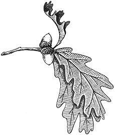

Winter is here again and, on our homestead, we welcome it with open arms. This is the time of the year when we can breathe easy and catch up on some of the writing and reading that we've put off for far too long. It's also one of the best seasons to be outside. There's nothing as restfully beautiful, to my mind, as fresh snow on evergreen trees. And, contrary to what many folks believe, winter can be a most productive time of the year for the wild food forager.
Fishing, in particular, takes on a new dimension when an angler can stride quickly out onto a frozen lake instead of putting in a boat and paddling to that "secret spot". Once over his choice "fishin' hole", the winter angler can then erect a simple shelter, cut a hole in the ice and fish for hours in perfect comfort . . . especially if the shelter is equipped with a little twig-burning stove.
It's also great fun to track rabbits in the snow during the cold months and cottontails usually furnish us with many good meals every winter.
Zero weather doesn't necessarily limit our gathering of wild plants either. Down in a huge marsh that I know about, there are still plenty of wampee plants sticking through the snow. Wind-blasted and snow-crusted, they nevertheless would furnish gallons of grain for coffee and biscuits if we gathered them all. Bur reed, another marsh plant that yields grain which looks almost exactly like kernels of corn, grows near the wampee.
Tasty beans, concealed in what look like flat leather pods, still cling to the black locust trees. They can be used like any other bean but, since the locust variety is uncultivated, they're much more satisfying to eat.
Of course we forage a number of other wild foods during the winter but if you only know where to find and how to harvest the few I've just mentioned, you'll put many a satisfying January meal under your belt.
Since fish of some kind are found in almost all lakes and streams year-round, ice fishing-like summer fishing-is one of the more important skills a food forager can develop.
Ice fishing tackle is quite simple to make. My gear consists only of a very short pole (about two feet long) and enough line to reach from the surface of the ice to the bottom of the body of water I'm fishing. I prefer hickory branch poles that taper from one inch on the large end to about 1/2-inch on the other. I cut these sticks in the spring, peel `em and leave them to cure under the eaves of the chicken shed. The following winter, when the ice on my favorite lake has frozen to the necessary safe thickness of at least six inches, I take the poles down and tie about 15 feet of two pound-test monofilament line to two pegs set at angles to each other and three inches apart in the butt end of each stick. When a pole isn't being used, its line is stored by wrapping the monofilament around these two pegs.
I drive a series of staples-at intervals of six inches-into each pole for line guides. Sometimes, when I'm making one of these fishing rigs and I don't have any large staples handy, I drill two holes through the pole at a slant along its centerline and then weave the monofilament through so that it comes out at the tip of the stick.
These poles are used for catching small trout and other panfish that usually weigh under one pound. Such fish winterfeed very gently and are sometimes hard to "feel" . . . hence the light line and a size ten or smaller hook.
I use goldenrod grubs almost exclusively to bait the ice fishing rigs I've just described. They're abundant, easy to find and one of the best winter baits available. You'll find these larvae curled up in the "balls" or round growths that distort the stems of many standing goldenrod stalks. Each ball contains one or two of the grubs . . . unless the growth has already been pierced by a winter bird. Such birds, it seems, relish the little larvae almost as much as do the fish. The birds, of course, leave a hole in each of the bulbs they rob . . . so disregard the balls that have been "broken into", snap the good ones off top and bottom and drop them into your pocket. When you have a couple dozen take them home, find a discarded match box or similar small container and cut the bulbs open with a knife.
Be careful when cutting into these balls. You don't want to injure the tender, fat grubs curled inside. Drop each larva into your matchbox for safe keeping as you open the balls and never cut out more than you think you'll need for the day. The little critters seem to keep better inside their nests than in any other container. The extra balls you have on hand should be stored outside where it's cool or else the grubs may mature into winged insects and fly away before you've had a chance to use them.
Worm-infested, rotten logs that can be knocked apart with an axe are another source of winter fish bait. The unfrozen ground on the very bottom of a manure pile will also yield active red worms during even January and February but it seems a shame to sacrifice these little compost makers for fish bait unless you simply can't find anything else.
Sometimes when I go after bigger fish in the winter I use the same short hickory poles described earlier . . . but outfitted with stronger line. My bait, in that case, is some type of wab bling spoon which is dropped into the water and jigged up and down. This is a deadly way to catch trout, northern pike and walleye. Some "experts" fish this way almost exclusively in the Great Lakes, now that those bodies of water support a good population of trout and salmon and such anglers easily catch all the fish their families can consume in just a few hours of pleasant jiggin' a week.
Another good way to fish, especially in inland lakes with a population of both panfish and northern pike, is with "tip-ups" used in conjunction with your usual panfish rig. A tip-up is a frame that is set over a hole in the ice and which signals when a fish is "on". This saves you from maintaining a constant watch on each line and allows you to fish three or four locations at the same time.
I make each of my tip-ups by lashing two hickory sticks, each 16 inches long and one-inch thick, across each other at right angles. The line is tied securely to the sticks, coiled loosely and placed atop the center of the cross. I then cut a six-inch-wide hole in the ice, bait the rig's hook (probably with a minnow) and lower the line into the water. When the bait has sunk to the desired depth, I tie a loose loop in the line and hang it over the end of the top hickory stick.
When a bigger fish takes the minnow, he'll pull down on the line causing the crossed sticks to tilt . . . signaling a "fish on". The fish won't feel much drag since the loop then pulls easily off the end of the tipped-down stick, allowing the coil of line lying on top of the frame to feed out as the fish runs. When I see this happen I pick up the line, set the hook and pull `im in hand overhand.
Since tip-ups are generally used for catching predator fish, minnows make an ideal bait for such a rig and I obtain mine in the winter with a minnow trap baited with corn bread crumbs.
A good minnow trap is made by lining the mouth of a onequart fruit jar with a funnel made of window screening. The small end of the funnel (only about one inch in diameter) is placed inside the jar and minnows-attracted in by the bait-seldom find their way out again once they've finished eating. The trap must be set under the ice or in ice-free streams to remain workable in freezing weather.
Minnows are hooked either under the dorsal or back fin, the lips or through the tail so they'll remain alive and swim around till a big fish grabs them. This does sound cruel but we must remember that minnows were apparently created largely to feed bigger fish and this sort of life-and-death struggle goes on all the time in every pond, stream and lake.
Some farmers hack fishing holes through the ice with an axe but a much better tool is an ice chisel. You can buy one, of course, or you can make your own by sharpening one end of an old car axle that is about four feet long. This takes considerable work so you'd better make friends with someone who has an electric grinder if you don't have one of your own.
Another way to make a good ice chisel is to have an 18-inch-long straight length of flat car spring welded to a five foot length of 3/4-inch steel pipe. Sharpen the protruding end of the spring and, at the other end of the pipe (which you'll be holding as you cut the ice), drill a hole, thread through and tie a length of leather thong. Place this thong around your wrist so that, when you poke through the last inch of ice, the chisel won't slip out of your hand and plummet straight to the bottom of the lake.
Once you have all your equipment and a supply of bait in hand, you're ready to go out on the ice, drop one or more lines through and practice your fishing skills.
If the day is warmish, use a float on your line. One of the goldenrod balls that you pried the grubs out of will work as well as anything. A float is a bother, however, on cold days when the ice keeps freezing over the hole you've cut. It's better then to crimp the line between your fingernails so that it curls into a loop. Watch this loop as you fish and-when it straightens out-you've got a bite. You'll have to watch constantly, though. It's hard to believe how lightly some fish bite in the winter and, if you aren't resolutely alert, you'll find that the blighters will bite and spit the hook out again before you can pull them up.
You can also increase your ice fishing success if you get right down on the ice after cutting a hole in it, shield your face on each side with your hands and look into the water to see if there's any fish there. You'll up your catch, too, if you keep your bait jigging slightly as you fish. Fishing depth is also very important . . . sometimes the best level is right under the ice and sometimes it's six feet or more deep. Keep jigging the bait up and down in tiny movements and keep changing depth until mid keep depth until you start catching fist..
Chances are, while you're on your way to and from the ice, you'll spy some rabbit tracks in the snow and-whether or not you have any luck with the fish-you may want to try your hand at "catching" a few cottontails.
Despite the fact that rabbits are found almost everywhere are one of the most easily-available wild meats, there are still vast numbers of uninformed people who think that cot tontails are not good to eat. That's fine with me and I'm glad to take any that might be discarded by the "sport" hunters.
I use a number of different methods to harvest rabbits, the easiest of which is probably the box trap. I make my traps out of scrap lumber with a sliding door which is controlled by a trigger. When the animal enters and nibbles on the bait (usually a carrot or apple), it trips the trigger and the door falls.
About four well-baited and tended box traps will keep a person-even if he lives in the city-in rabbit meat. In fact, the cottontail population in some municipalities gets so large that the bureaucrats have to hire their friends and relations to trap the bunnies and move them out to the surrounding countryside. This is one situation, then, when a food forager can get some free meat at the same time he helps to keep taxes down.
A sling shot in the hands of a competent marksman will harvest rabbits and many country folk have a dog trained to chase cottontails. Since a running rabbit circles around in its "home" territory, all a hunter with a good dog has to do is go out into rabbit cover and wait until the dog gets one up and chases it around the circuit. The makings of a mighty satisfying meal can then be harvested with a sling shot, bow and arrow, 22 rifle or trusty 12 gauge smokepole (shotgun).
We like rabbit meat so well that I have purposely built a wild bunny thicket on my homestead by planting four 45-foot-long rows of multiflora rose six feet apart. Before the plants got too big, I dug a half dozen six-foot lengths of drain tile into the ground under the hedges and the idea works very well. The rabbits use the tiles for burrows and thin the multiflora rose just enough to make it produce a good crop of rose hips. In addition, we generally harvest a couple dozen rabbit dinners from the hedgerow every winter.
I keep the cottontails fat and sassy by throwing all our potato peelings, cull corn and other such food into the thicket . . . and I believe that almost anyone could use this idea to attract a complete year's supply of rabbit meat. Cottontails are so prolific that a little good cover and some supplemental food are all the encouragement they need to increase "like rabbits".
A cottontail is cleaned by first cutting off its head and feet. Then pinch up the skin at the center of its back and tear a hole large enough to get your fingers into. Place both forefingers in the hole and pull the halves of skin off over the shoulders on one end and the hips on the other. Pick off any stray bits of hide and hair, then turn the rabbit belly up and very carefully slit up the center of the abdomen to remove the intestines.
It's necessary at this point to cut through the pelvis bone to remove the genitals, colon and tail . . . and the slit for the intestines should be continued through the rib cage to free the heart and lungs.
For our favorite rabbit recipe, we salt a cut-up cottontail and coat it by tossing the pieces in a paper bag that contains a few spoonfuls of flour. We then brown the chunks of meat on top of the stove in a little cooking oil, remove and place them in a covered roasting pan and bake in a 350° oven for one hour. You should take care to never eat rabbit rare for, like pork, lightly cooked rabbit can transmit a number of diseases to man.
If we have plenty of time we like to brew our rabbits up into hasenpfeffer. This is a great old German dish that you can make by skinning and cutting up a large rabbit. Place the pieces in a crock or jar and cover them with equal parts of vinegar and water. Add two sliced onions, 1/2-teaspoon salt, six peppercorns and one bay leaf. Soak the rabbit in this solution for two days, then separate the liquid and the meat. Cut the rabbit into smaller pieces if desired, salt and toss in flour. Brown the pieces, place them in a covered roasting pan and roast (basting often with the liquid in which the rabbit was soaked) at 325° until done.
If you find yourself with too many rabbit on hand to use at once just remove the entrails, leave the fur on and hang the extras outside where they'll stay frozen. If you don't eat this reserve stock before it thaws, can it using any good recipe for canned chicken.
I've heard that extra rabbits can be boiled and packed a covering of lard, also. Preserved this way, they'll keep quite well as long as the lard doesn't melt. Then too, the cottontails no doubt could be salted and smoked and kept for as long as you'd like. Enough about protein, though. Let's get on to some carbohydrates.
Wampee (Peltrandra Virginica) and bur reed (Sparganiaceae Eurycarpum) flourish in a marsh near here and both plants have a long growing season. When the frost is late, as it was this year, they produce an abundance of wild grain, which we call "swamp corn." Unlike some other marsh plants, seeds from these two cling to the stalk far into the winter and reasonably well-laden stems can sometimes be found protruding through the snow.
I harvest both wampee and bur reed by picking the grain as if it were berries. And, although the seeds are very hard at this time of year and take a couple of grindings in the Corona mill before they reduce to flour, the combined harvest goes well as both coffee and an ingredient for biscuits.
Coffee is made by coarse grinding a cupful of seeds and boiling them in four cups of water until the brew is very dark. Strain the beverage through a tea strainer or let settle and drink black or with cream, sweetened or unsweetened.
A cup of wampee or bur reed seeds should be ground at least twice and then sifted for biscuits. Mix 1/2-cup of this flour with 1/2-cup of wheat flour and add a dash of salt and four teaspoons of baking powder. Moisten to a soft dough, shape into biscuits and bake at 425° for at least 15 minutes or until the finished product will pass the clean toothpick test. The biscuits will increase in size at least three times or more during baking.
Snow time is also a good time to pick beans if those beans happen to be from the large black locust tree (Robinia Pseudoacacia) Pick what you can reach and then take a long pole and whack the pods that are higher up. They'll come spinning down to be gathered from the snow. Pick a lot of these pods.
The beans are not only very delicious when they're prepared right, but it also takes plenty of them to make a meal.
The pods can be opened by hand or, if they're good and dry, the beans can be threaded out by placing the filled hulls in a clean pail and stomping them with a stout stick. After the husks are reduced to small pieces, winnow out the beans.
For baked bean and rabbit casserole, put two cups of locust beans in water enough to cover and let them soak overnight. Drain, place the beans in a large pan, cover with water and add 1/2-pound pork neck bones and 1/4-cup of diced onion. Simmer over a medium fire for three to four hours.
Remove the beans from the fire, drain and set aside a cup of the liquid. Place the drained beans in a lightly greased baking dish and add two tablespoons molasses, three tablespoons catsup and one tablespoon of dried mustard.
Pour the cup of liquid that was set aside over the bean dish. Season, flour and brown one medium rabbit which has been cut into the traditional six pieces. Place the browned rabbit in a circle on top of the beans, peel one large onion and place the onion in the center of the circle of rabbit. Cover and bake at 325° for approximately one hour. If the dish is too moist, uncover and bake it for another twenty minutes.
Locust beans are also good just boiled in water (add a little crumbled, fried bacon for flavoring) or added to fish and bean soup.
For the latter, catch and clean about six medium-sized blue gills. Chop the fish into chunks and put them in a pan containing 12 cups of water. Add two cups of soaked locust beans and simmer, covered, for three to four hours.
After the long simmer, add 1/2-cup chopped onions, 1/2 cup chopped celery with leaves and 1/2-cup chopped carrot. Further add one bay leaf and a good dash of pepper. Simmer the mixture for at least another half hour. If it's too thin add whole grain flour, a tablespoon at a time, until the soup is the desired thickness. Happy eating!
|
 |
|
|
|
|
|
|